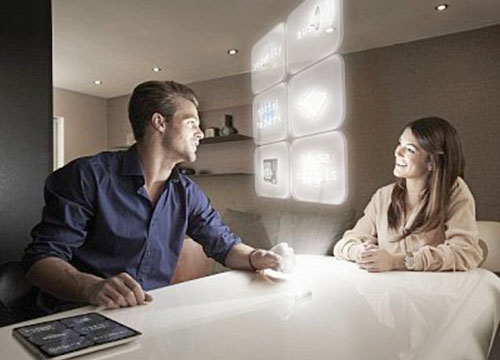

《星球大战》中全息影像技术已可通过电脑实现
据国外媒体报道，科幻影片《星球大战》中全息视频（holographic video）情景或许在不远的将来能够变成现实。麻省理工大学的科学家已经在全息视频方面取得了重大突破，使得低成本、高质量的全息视频成为可能。
直到今天，全息视频技术还停留在科幻电影中，其中最著名的要数第一部《星球大战》电影中投射到空中的莉亚公主全息画面。
目前，能够用来进行动态全息影像投射的装置还十分昂贵，并且还有很多限制因素。其中，一个主要的难题是被称为“空间光学调制器”的器件，它能够引导光线在三维空间中形成图像。根据目前的技术水平，成像的大小，视角、帧频以及成像深度都受到限制。
麻省理工大学的科学家研制出的新型“空间光学调制器”，能够克服这些困难。该技术能够把全息视频从科幻带入到现实当中。科学家估计，除了光源之外，基于该项技术的全息显示器的制造成本低于500美元。该研究成果发表在了著名的《自然》杂志上。
项目的领导人Michael Bove博士在论文中写道“我们现在研究的显示器是基于光学器件阵列，超过半米宽的全息视频显示器需要专用的硬件。我们现在可以制成全色彩的全息视频显示器，并且具有标准视频的分辨率和30赫兹的刷新频率。”
全息投影可以允许观众四处走动，并且可以从任何角度获得清晰的透视影像。